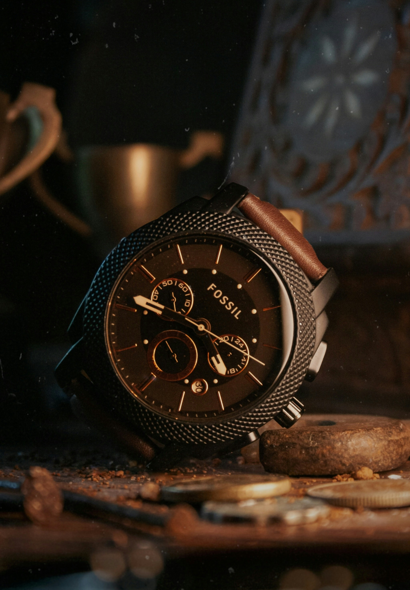

Trending

Classic

A watch is a small clock carried or worn by a person. It makes it easy to see the time. It is also a fashion accessory for men and women, and expensive watches are designed for this purpose. A watch may be one of the few accessories worn by a person.
A wristwatch is designed to be worn on a wrist, attached by a strap or other type of bracelet. A pocket watch is to be carried in a pocket. There are other variations. Nurses often wear a watch attached to the front of their uniform. It hangs down from a short strap: when lifted by the user it is right side up.
+91 564427368334
trendwatchstore.com
Daniels, George, Watchmaking, London: Philip Wilson Publishers, 1981 (reprinted 15 June 2011) De Carle, Donald, (Illustrations by E. A. Ayres), Practical Watch Repairing, 3rd edition, New York : Skyhorse Pub., 2008. ISBN 978-1-60239-357-8. Significant information on watches, their history, and inner workings. Denn, Mark, "The Tourbillon and How It Works," IEEE Control Systems Magazine, June 2010, IEEE Control Systems Society, DOI 10.1109/MCS.2010.936291. Donzé, Pierre-Yves. "Dynamics of innovation in the electronic watch industry: a comparative business history of Longines